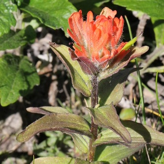
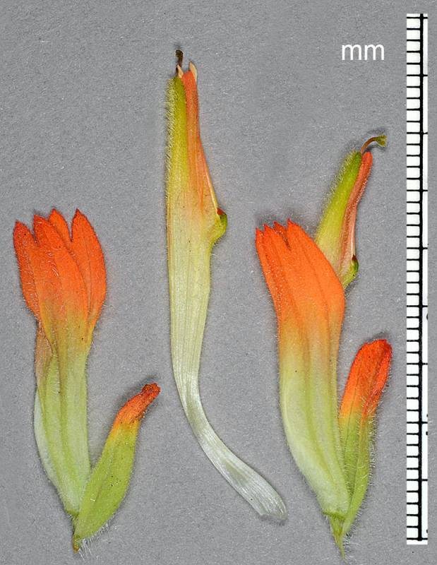

Castilleja litoralis
- Common name
- Littoral Paintbrush
- Family
- Orobanchaceae
- Family common name
- Broomrape Family
- Blooms
- April - August
- Habitat
- Dry places along bluffs, chaparral, near coast.
- Inflorescence color
- Mixed red and green.
- Stature
- 6 - 24". Purplish erect stems, hairless or with fine short hairs. with few branches.
- Leaves
- Lance-shaped, 1 - 3 in. long, entire or lobed, tips rounded.
- Florets
- Green bracts with 3-5 long red lobes, narrow red calyx lobes, hairy flower with yellow or red on edges of beak, green to dark violet lower lip.
Range Map
OR Flora